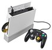
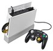
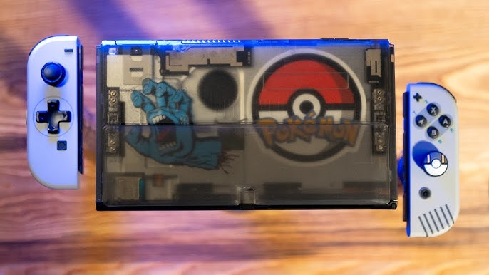
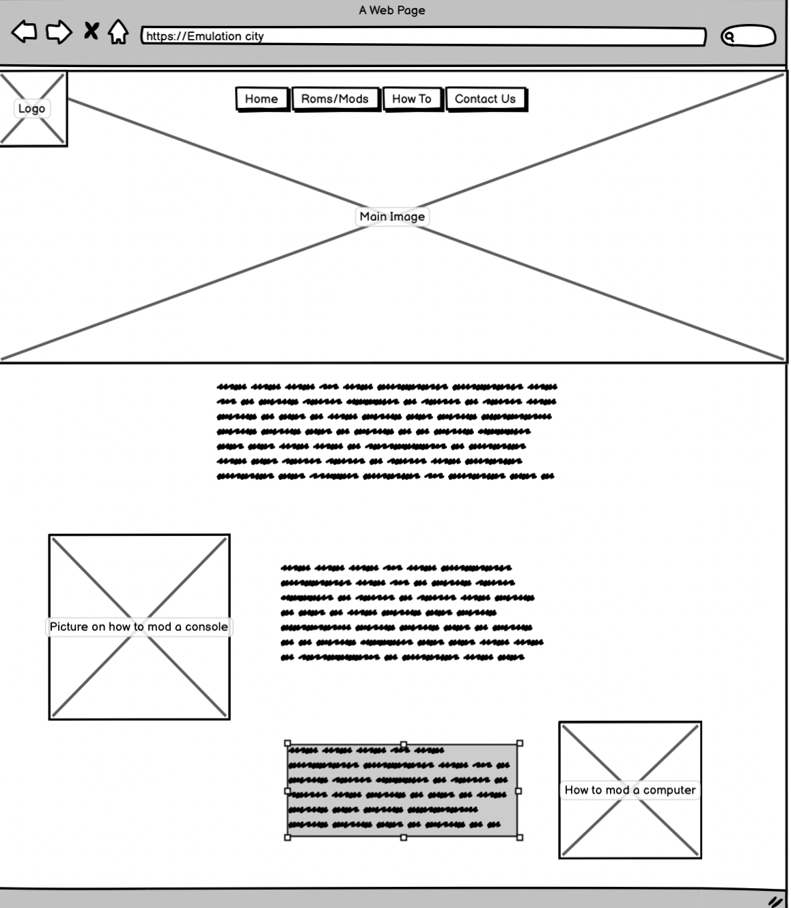

Overview
Purpose
This website is to create a place to talk about classic video game emulation in a safe and friendly envirornment
Audience
My audience is those who are older gamers who want to recapture the joys of their childhood but are unable to find the games they would play for both reasonable prices and through 1st party sources.
Branding
Website Logo

Style Guide
Color Palette
Palette URL:
https://coolors.co/f8f9fa-e9ecef-dee2e6-ced4da-adb5bd-6c757d-495057-343a40-212529| Primary | Secondary | Accent 1 | Accent 2 |
|---|---|---|---|
| #396E94 | #E7C24F | #A43312 | #A43312 |
Typography
Heading Font: Press Start 2P
Paragraph Font: Press Start 2P
Normal paragraph example
The Home of video game emulation, if you don't want to loose your precious childhood video game memories then you've come to the right place. With our help you can hold onto the games that you can't find anywhere else. Tired of the new business model of video games? We are too. It's like the saying goes, "If buying isn't keeping emulation isn't stealing". Stick it to the companies who take your money but won't let you keep what you buy.
Colored paragraph example
Only for a yearly price of 50 dollars can you get this amazing offer!
Navigation
Site Map
Content
Home page
What is Emulation City? My site, to put it simply, is a place for people to come and reclaim their lost childhood in video games. In todays video game industry, we dont see many efforts to preserve old games, no matter how beloved they are. Whether it is due to companies moving on to more modern games or wanting to push newer technology, we see many old consoles/games being left behind. This leads to many older games being left to third-party sources or scalpers, who will then sell them for far more than they are worth. Emulation City seeks to change that by making older games and the consoles that can run them more available either through modification of an existing system or through emulation.
Images for the Home page
[Page 2]
This page shows what content we have to offer and what games and consoles we support What do we offer? Emulation City offers many different options for video game emulation. If you already have a ready-to-play system, we can provide the ROMs for any game you want. Whether it is Nintendo, Microsoft Xbox, or even Sony PlayStation, you can find it here on our site. If you want to learn how to modify your console or computer to play these games, we have a simple tutorial for you!
Images for the Page 2

 



[Page 3]
This shows how to mod your own console to support roms
Images for the Page 3
Wireframes
Create three wireframes for your site. One for each page and list them here
Home
This is the home page for Emulation City. It will have a brief description of what the site is about. It will also have a few images detailing what we support and what we offer.

[Page 2]
This page will show what type of roms are available from Nintendo to Sony.

[Page 3]
This page will essentially be on how to mod your console or computer to support roms. The images will lead to trusted links on how to do so.
